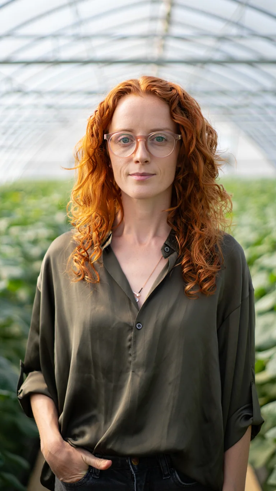
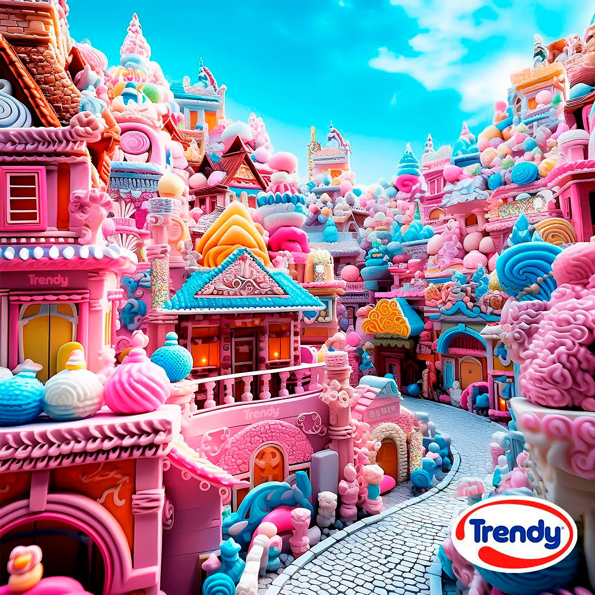
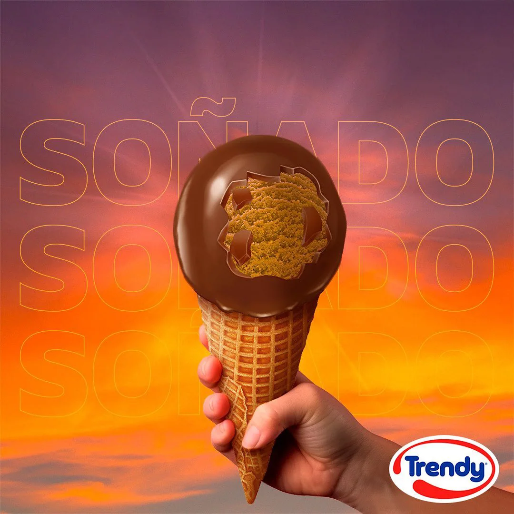
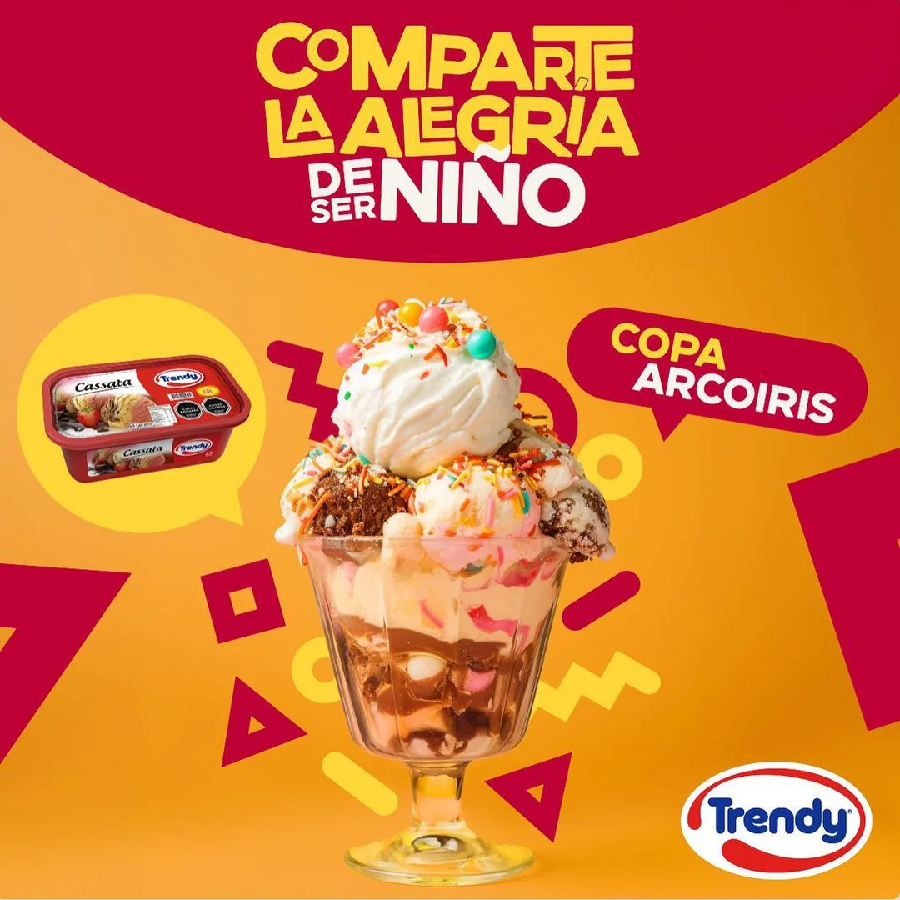
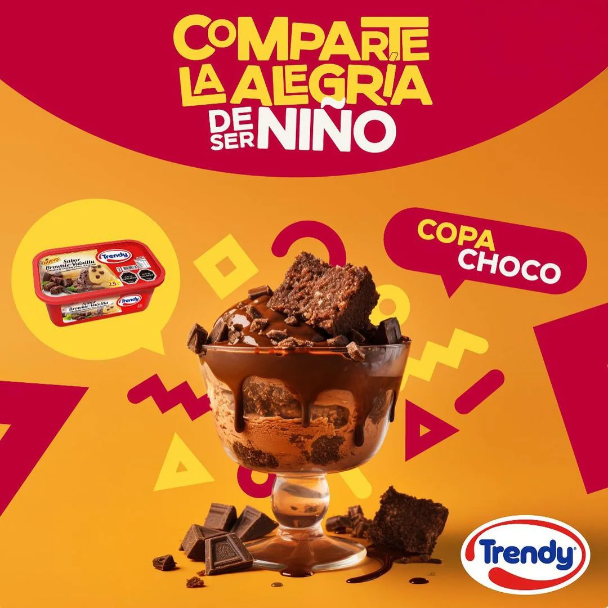
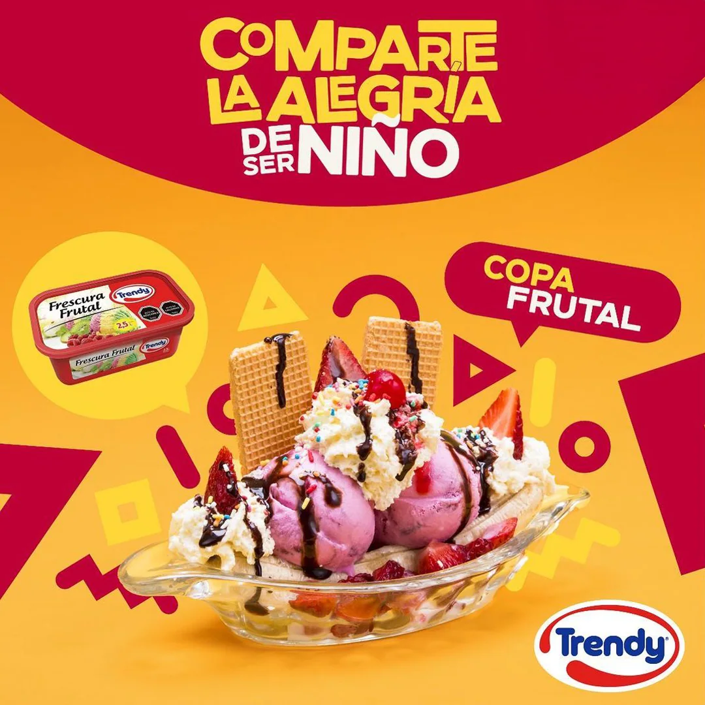
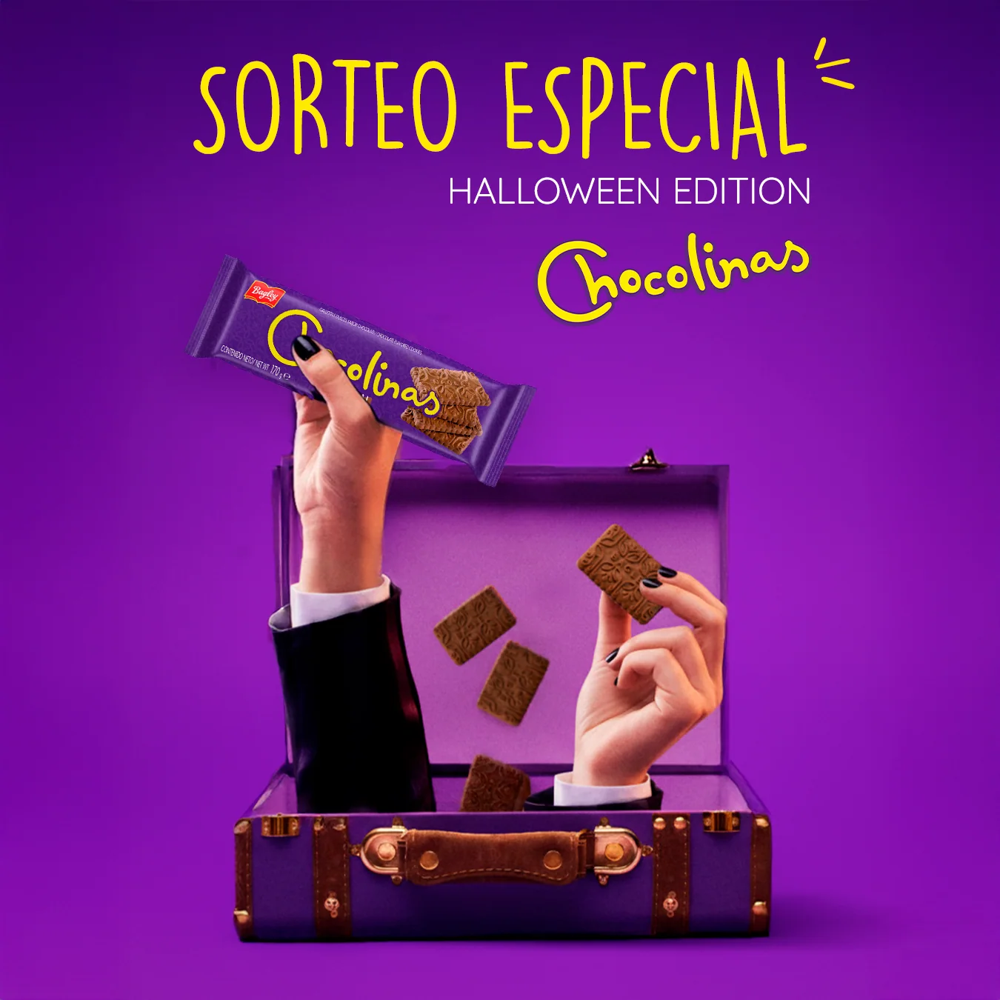
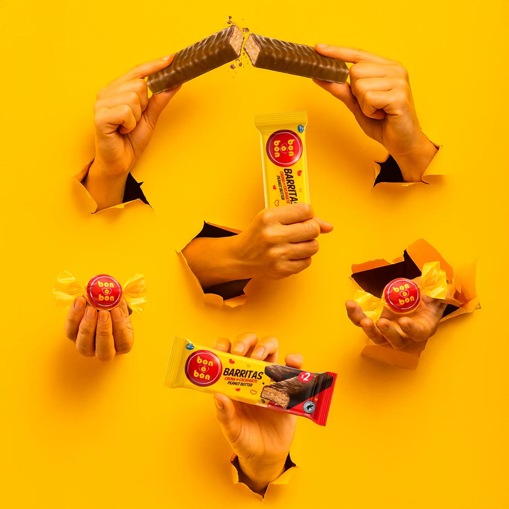

Artificial Intelligence
I regularly work with AI tools such as Midjourney, Adobe Firefly, Perplexity, Sora, Nano Banana, Reve, and others, choosing each one based on what the project specifically needs. I use them for both image and video generation, often blending outputs together and combining them with photo compositing and retouching. This allows me to either speed up and enhance the design process or create assets entirely from scratch, like generating brand-aligned characters or scenarios.
This workflow has strengthened my prompt-building skills and my ability to maintain visual consistency across a brand’s content, which I believe is the key to making AI a powerful and reliable creative tool.







